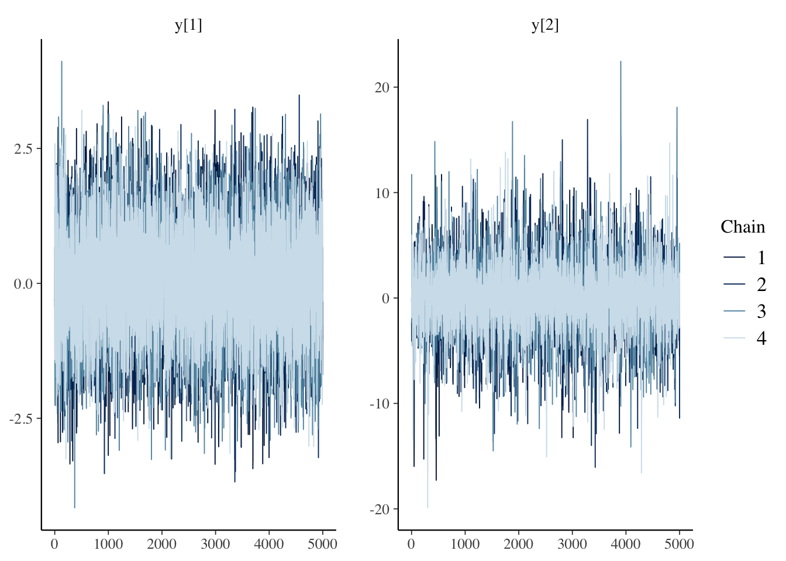
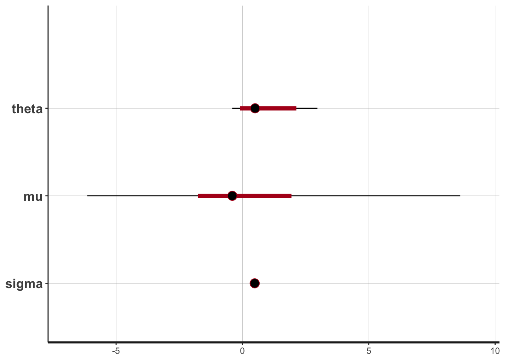

SDE のベイズ推定入門
YUIMA と Stan を用いた確率過程のベイズ推定入門
2024-05-12
A Blog Entry on Bayesian Computation by an Applied Mathematician
$$
$$
RStan は Rcpp や inline といったパッケージにより C++ を R から呼び出すことで，Stan とのインターフェイスを実現している．
一方で CmdStanR は CmdStan という Stan のコマンドラインインターフェイスを R から呼び出すことで，Stan とのインターフェイスを実現している．
RStan パッケージRStan Getting Started に従って実行します．
ほとんどの場合，次の１行でインストールできます：
install.packages("rstan", repos = "https://cloud.r-project.org/", dependencies = TRUE)RStan の利用のためには，c++ コンパイラが必要XCode コマンドラインツールをインストールすることにより，/Library/Developer/CommandLineTools/usr/bin に clang++ がインストールされます．
clang++ -v -E -x c++ /dev/null現在では，macrtools を通じて C++ コンパイラを R 内でインストールすることもできます．
次のコードが実行されれば，インストールは成功しています．
example(stan_model, package = "rstan", run.dontrun = TRUE)stan 関数RStan パッケージの本体は stan 関数である：
stan(file, model_name = "anon_model", model_code = "", fit = NA,
data = list(), pars = NA,
chains = 4, iter = 2000, warmup = floor(iter/2), thin = 1,
init = "random", seed = sample.int(.Machine$integer.max, 1),
algorithm = c("NUTS", "HMC", "Fixed_param"),
control = NULL, sample_file = NULL, diagnostic_file = NULL,
save_dso = TRUE, verbose = FALSE, include = TRUE,
cores = getOption("mc.cores", 1L),
open_progress = interactive() && !isatty(stdout()) &&
!identical(Sys.getenv("RSTUDIO"), "1"),
...,
boost_lib = NULL, eigen_lib = NULL
)model_code="" が Stan モデルを定義するコードを，文字列として直接受け渡すための引数である．
返り値はフィット済みの stanfit オブジェクトである．
他の方法は次のとおり：
file としてファイルへのパスを渡すstanfit オブジェクトを fit 引数として渡すdata：データを与える．list 型．iter：繰り返し回数．デフォルトは 2000．chains：チェイン数．デフォルトは 4．stanfit オブジェクトstan 関数は Stan モデルを C++ に変換して実行し，結果を stanfit オブジェクトとして返す．
これに対して print, summary, plot などのメソッドが利用可能である．
さらに，次の様にして MCMC サンプルを取り出すことができる：
as.array メソッドを用いて MCMC サンプルを array 型で取り出すextract メソッドを用いて MCMC サンプルを list 型で取り出すposterior ライブラリの as_draws_df メソッドを用いて MCMC サンプルを df 型で取り出す．種々のデータ型 <format> に対して as_draws_<format> が存在する．取り出した MCMC サンプルは bayesplot パッケージの mcmc_trace, mcmc_dens などの関数を用いて可視化することができる．
scode <- "
parameters {
array[2] real y;
}
model {
y[1] ~ normal(0, 1);
y[2] ~ double_exponential(0, 2);
}
"
fit <- stan(model_code = scode, iter = 10000, chains = 4, verbose = FALSE)library(bayesplot)
mcmc_trace(as.array(fit), pars = c("y[1]", "y[2]"))
mcmc_dens(as.array(fit), pars = c("y[1]", "y[2]"))OU 過程
\[ dX_t=\theta(\mu-X_t)\,dt+\sigma\,dW_t \]
に対して，stan 関数でベイズ推定を実行してみます．
library(yuima)
model <- setModel(drift = "theta*(mu-X)", diffusion = "sigma", state.variable = "X")パラメータは \[ \begin{pmatrix}\theta\\\mu\\\sigma\end{pmatrix} = \begin{pmatrix}1\\0\\0.5\end{pmatrix} \tag{1}\] として YUIMA を用いてシミュレーションをし，そのデータを与えてパラメータが復元できるかをみます．
library(rstan)
excode <- "data {
int N;
real x[N+1];
real h;
}
parameters {
real theta;
real mu;
real<lower=0> sigma;
}
model {
x[1] ~ normal(0,1);
for(n in 2:(N+1)){
x[n] ~ normal(x[n-1] + theta * (mu - x[n-1]) * h, sqrt(h) * sigma);
}
}"
sampling <- setSampling(Initial = 0, Terminal = 3, n = 1000)
yuima <- setYuima(model = model, sampling = sampling)
simulation <- simulate(yuima, true.parameter = c(theta = 1, mu = 0, sigma = 0.5), xinit = rnorm(1))
sde_dat <- list(N = yuima@sampling@n,
x = as.numeric(simulation@data@original.data),
h=yuima@sampling@Terminal/yuima@sampling@n)# シミュレーション結果
plot(simulation)# ベイズ推定
rstan_options(auto_write = TRUE)
options(mc.cores = parallel::detectCores())
fit <- stan(model_code=excode, data = sde_dat, iter = 1000, chains = 4)print(fit)Inference for Stan model: anon_model.
4 chains, each with iter=1000; warmup=500; thin=1;
post-warmup draws per chain=500, total post-warmup draws=2000.
mean se_mean sd 2.5% 25% 50% 75% 97.5% n_eff Rhat
theta 0.89 0.25 1.01 -0.44 0.07 0.59 1.70 3.27 17 1.14
mu 0.02 0.27 3.59 -5.90 -0.15 0.12 0.42 7.23 178 1.02
sigma 0.50 0.00 0.01 0.48 0.49 0.50 0.51 0.52 108 1.07
lp__ 3105.37 0.14 1.23 3102.48 3104.76 3105.46 3106.29 3107.15 80 1.06
Samples were drawn using NUTS(diag_e) at Thu Sep 19 16:46:14 2024.
For each parameter, n_eff is a crude measure of effective sample size,
and Rhat is the potential scale reduction factor on split chains (at
convergence, Rhat=1).パラメータ (1) がよく推定できていることがわかる．特に \(\sigma\) が安定して推定できている：
plot(fit)ci_level: 0.8 (80% intervals)outer_level: 0.95 (95% intervals)
library("bayesplot")
library("rstanarm")
library("ggplot2")
posterior <- as.matrix(fit)
plot_title <- ggtitle("Posterior distributions",
"with medians and 80% intervals")
mcmc_areas(posterior,
pars = c("theta", "mu", "sigma"),
prob = 0.8) + plot_titlecmath が見つからないQuitting from lines 329-343 (adastan.qmd)
compileCode(f, code, language = language, verbose = verbose) でエラー:
using C++ compiler: ‘Apple clang version 16.0.0 (clang-1600.0.26.3)’using C++17using SDK: ‘MacOSX15.0.sdk’In file included from <built-in>:1:In file included from /Library/Frameworks/R.framework/Versions/4.3-arm64/Resources/library/StanHeaders/include/stan/math/prim/fun/Eigen.hpp:22:In file included from /Library/Frameworks/R.framework/Versions/4.3-arm64/Resources/library/RcppEigen/include/Eigen/Dense:1:In file included from /Library/Frameworks/R.framework/Versions/4.3-arm64/Resources/library/RcppEigen/include/Eigen/Core:19:/Library/Frameworks/R.framework/Versions/4.3-arm64/Resources/library/RcppEigen/include/Eigen/src/Core/util/Macros.h:679:10: fatal error: 'cmath' file not found 679 | #include <cmath> | ^~~~~~~1 error generated.make: *** [file2546221168fc.o] Error 1
呼び出し: .main ... cxxfunctionplus -> <Anonymous> -> cxxfunction -> compileCode
追加情報: 警告メッセージ:
1: パッケージ 'rstan' はバージョン 4.3.1 の R の下で造られました
2: パッケージ 'bayesplot' はバージョン 4.3.1 の R の下で造られました
3: パッケージ 'rstanarm' はバージョン 4.3.1 の R の下で造られました
Quitting from lines 329-343 (adastan.qmd)
sink(type = "output") でエラー: コネクションが不正です
呼び出し: .main ... eval -> stan -> stan_model -> cxxfunctionplus -> sink
実行が停止されました 大変長く書いてあるが，要は fatal error: 'cmath' file not found である．
筆者の場合は純粋な clang++ の問題であった：
❯ echo '#include <cmath>
#include <iostream>
int main() {
double result = std::sqrt(16.0);
std::cout << "The square root of 16 is " << result << std::endl;
return 0;
}' > test.cpp
~
❯ clang++ -std=c++17 test.cpp -o test
test.cpp:1:10: fatal error: 'cmath' file not found
1 | #include <cmath>
| ^~~~~~~
1 error generated.このような場合は，まず Xcode の再インストールをすると良い．
softwareupdate --listの出力を用いて，次のようにする：
softwareupdate -i "Command Line Tools (macOS High Sierra version 10.13) for Xcode-10.1"または次のようにする：
sudo rm -rf /Library/Developer/CommandLineTools
xcode-select --installCmdStanR パッケージCmdStanPy, CmdStanR はいずれも Stan のインターフェースである．
CmdStanR は R6 オブジェクトを用いており，大変現代的な実装を持っている．
Getting Started with CmdStanR に従って実行します．
install.packages("cmdstanr", repos = c('https://stan-dev.r-universe.dev', getOption("repos")))CmdStanR の利用のためには，CmdStan が必要CmdStanR を直接インストールすることもできますが，CmdStanR 内部からインストールすることもできます．
install_cmdstan(cores = 2)cmdstan_version()[1] "2.35.0"多くの場合，自動で CMDSTAN 環境変数にパスが設定されます．次のいずれかの方法で確認できます：
Sys.getenv("CMDSTAN")
cmdstan_path()CmdStanR の美点の一つは，install_cmdstan() により CmdStan をアップデートすることで最新の Stan を R から簡単に利用できることである．
一方で RStan はパッケージ自体のアップデートを待つ必要がある．
cmdstan_model() 関数は，Stan 言語による記述されたモデル定義を，C++ コードにコンパイルし，その結果を R6 オブジェクトとして返す．1
cmdstan_model(stan_file = NULL, exe_file = NULL, compile = TRUE, ...)返り値は CmdStanModel オブジェクトである．ただし R6 オブジェクトでもあり，R6 流のメソッドの呼び方 $ が使える．
file <- file.path(cmdstan_path(), "examples", "bernoulli", "bernoulli.stan")
mod <- cmdstan_model(file)Stan 言語による定義は次のようにして確認できる：
mod$print()data {
int<lower=0> N;
array[N] int<lower=0, upper=1> y;
}
parameters {
real<lower=0, upper=1> theta;
}
model {
theta ~ beta(1, 1); // uniform prior on interval 0,1
y ~ bernoulli(theta);
}names(mod$variables())[1] "parameters" "included_files" "data"
[4] "transformed_parameters" "generated_quantities" names(mod$variables()$transformed_parameters)character(0)元となったファイルのパスも stan_file(), exe_file() で確認できる．
write_stan_file() 関数は Stan コードをファイルに書き出すことができる：
write_stan_file(
code,
dir = getOption("cmdstanr_write_stan_file_dir", tempdir()),
basename = NULL,
force_overwrite = FALSE,
hash_salt = ""
)グローバル環境変数が設定されていない限り，tempdir() で一時ファイルが作成される．これは R セッションの終了とともに削除される．
stan_file_variables <- write_stan_file("
data {
int<lower=1> J;
vector<lower=0>[J] sigma;
vector[J] y;
}
parameters {
real mu;
real<lower=0> tau;
vector[J] theta_raw;
}
transformed parameters {
vector[J] theta = mu + tau * theta_raw;
}
model {
target += normal_lpdf(tau | 0, 10);
target += normal_lpdf(mu | 0, 10);
target += normal_lpdf(theta_raw | 0, 1);
target += normal_lpdf(y | theta, sigma);
}
")
mod_v <- cmdstan_model(stan_file_variables)
variables <- mod_v$variables()data_list <- list(N = 10, y = c(0,1,0,0,0,0,0,0,0,1))
fit <- mod$sample(
data = data_list,
seed = 123,
chains = 4,
parallel_chains = 4,
refresh = 1000 # print update every 1000 iters
)Running MCMC with 4 parallel chains...
Chain 1 Iteration: 1 / 2000 [ 0%] (Warmup)
Chain 1 Iteration: 1000 / 2000 [ 50%] (Warmup)
Chain 1 Iteration: 1001 / 2000 [ 50%] (Sampling)
Chain 1 Iteration: 2000 / 2000 [100%] (Sampling)
Chain 2 Iteration: 1 / 2000 [ 0%] (Warmup)
Chain 2 Iteration: 1000 / 2000 [ 50%] (Warmup)
Chain 2 Iteration: 1001 / 2000 [ 50%] (Sampling)
Chain 2 Iteration: 2000 / 2000 [100%] (Sampling)
Chain 3 Iteration: 1 / 2000 [ 0%] (Warmup)
Chain 3 Iteration: 1000 / 2000 [ 50%] (Warmup)
Chain 3 Iteration: 1001 / 2000 [ 50%] (Sampling)
Chain 3 Iteration: 2000 / 2000 [100%] (Sampling)
Chain 4 Iteration: 1 / 2000 [ 0%] (Warmup)
Chain 4 Iteration: 1000 / 2000 [ 50%] (Warmup)
Chain 4 Iteration: 1001 / 2000 [ 50%] (Sampling)
Chain 4 Iteration: 2000 / 2000 [100%] (Sampling)
Chain 1 finished in 0.0 seconds.
Chain 2 finished in 0.0 seconds.
Chain 3 finished in 0.0 seconds.
Chain 4 finished in 0.0 seconds.
All 4 chains finished successfully.
Mean chain execution time: 0.0 seconds.
Total execution time: 0.2 seconds.返り値 fit は CmdStanMCMC オブジェクトであり，summary() などのメソッドが使用可能である．
summary() メソッドは，posterior パッケージのメソッド summarise_draws() を自動で使うようになっている．
fit$summary()# A tibble: 2 × 10
variable mean median sd mad q5 q95 rhat ess_bulk ess_tail
<chr> <dbl> <dbl> <dbl> <dbl> <dbl> <dbl> <dbl> <dbl> <dbl>
1 lp__ -7.30 -7.00 0.797 0.345 -8.86 -6.75 1.00 1923. 2017.
2 theta 0.257 0.241 0.124 0.127 0.0800 0.485 1.00 1232. 1477.fit$summary(variables = c("theta", "lp__"), "mean", "sd")# A tibble: 2 × 3
variable mean sd
<chr> <dbl> <dbl>
1 theta 0.257 0.124
2 lp__ -7.30 0.797同様にして draws() メソッドで bayesplot パッケージが呼び出される．
mcmc_hist(fit$draws("theta"))`stat_bin()` using `bins = 30`. Pick better value with `binwidth`.実際には，最初に CmdStanModel オブジェクトを生成し，compile() メソッドを呼び出している．これが compile = TRUE フラッグの存在意義である．↩︎